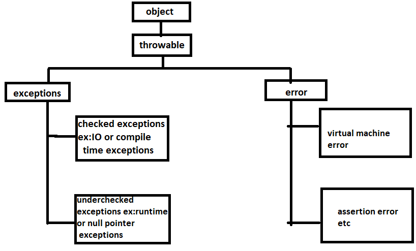

Exceptions In Java
What is an Exception?
An exception is an unwanted or unexpected event, which occurs during the execution of a program i.e at run time, that disrupts the normal flow of the program’s instructions.Error vs Exception
Error: An Error indicates serious problem that a reasonable application should not try to catch.Exception: Exception indicates conditions that a reasonable application might try to catch.
Exception Hierarchy
All exception and errors types are sub classes of class Throwable, which is base class of hierarchy.One branch is headed by Exception. This class is used for exceptional conditions that user programs should catch. NullPointerException is an example of such an exception.Another branch,Error are used by the Java run-time system(JVM) to indicate errors having to do with the run-time environment itself(JRE). StackOverflowError is an example of such an error.
How JVM handle an Exception?
Default Exception Handling : Whenever inside a method, if an exception has occurred, the method creates an Object known as Exception Object and hands it off to the run-time system(JVM). The exception object contains name and description of the exception, and current state of the program where exception has occurred. Creating the Exception Object and handling it to the run-time system is called throwing an Exception.There might be the list of the methods that had been called to get to the method where exception was occurred. This ordered list of the methods is called Call Stack.Now the following procedure will happen.
-
The run-time system searches the call stack to find the method that contains block of code that can handle the occurred exception. The block of the code is called Exception handler.
-
The run-time system starts searching from the method in which exception occurred, proceeds through call stack in the reverse order in which methods were called.
-
If it finds appropriate handler then it passes the occurred exception to it. Appropriate handler means the type of the exception object thrown matches the type of the exception object it can handle.
-
If run-time system searches all the methods on call stack and couldn’t have found the appropriate handler then run-time system handover the Exception Object to default exception handler , which is part of run-time system. This handler prints the exception information in the following format and terminates program abnormally.
Example :
// Java program to demonstrate how exception is thrown.
class ThrowsExecp{
public static void main(String args[]){
String str = null;
System.out.println(str.length());
}
}
|
Output :
Exception in thread "main" java.lang.NullPointerException
at ThrowsExecp.main(File.java:8)
|
Let us see an example that illustrate how run-time system searches appropriate exception handling code on the call stack :
// Java program to demonstrate exception is thrown
// how the runTime system searches th call stack
// to find appropriate exception handler.
class ExceptionThrown
{
// It throws the Exception(ArithmeticException).
// Appropriate Exception handler is not found within this method.
static int divideByZero(int a, int b){
// this statement will cause ArithmeticException(/ by zero)
int i = a/b;
return i;
}
// The runTime System searches the appropriate Exception handler
// in this method also but couldn't have found. So looking forward
// on the call stack.
static int computeDivision(int a, int b) {
int res =0;
try
{
res = divideByZero(a,b);
}
// doesn't matches with ArithmeticException
catch(NumberFormatException ex)
{
System.out.println("NumberFormatException is occured");
}
return res;
}
// In this method found appropriate Exception handler.
// i.e. matching catch block.
public static void main(String args[]){
int a = 1;
int b = 0;
try
{
int i = computeDivision(a,b);
}
// matching ArithmeticException
catch(ArithmeticException ex)
{
// getMessage will print description of
exception(here / by zero)
System.out.println(ex.getMessage());
}
}
}
|
Output :
/ by zero. |
How Programmer handles an exception?
Customized Exception Handling : Java exception handling is managed via five keywords: try, catch, throw, throws, and finally. Briefly, here is how they work. Program statements that you think can raise exceptions are contained within a try block. If an exception occurs within the try block, it is thrown. Your code can catch this exception (using catch block) and handle it in some rational manner.
System-generated exceptions are automatically thrown by the Java run-time system. To manually throw an exception, use the keyword throw. Any exception that is thrown out of a method must be specified as such by a throws clause. Any code that absolutely must be executed after a try block completes is put in a finally block.
Need of try-catch clause(Customized Exception Handling)
Consider the following java program.
// java program to demonstrate
// need of try-catch clause
class GFG {
public static void main (String[] args) {
// array of size 4.
int[] arr = new int[4];
// this statement causes an exception
int i = arr[4];
// the following statement will never execute
System.out.println("Hi, I want to execute");
}
}
|
Output :
Exception in thread "main" java.lang.ArrayIndexOutOfBoundsException: 4
at GFG.main(GFG.java:9)
|
Explanation : In the above example an array is defined with size i.e. you can access elements only from index 0 to 3. But you trying to access the elements at index 4(by mistake) that’s why it is throwing an exception.In this case, JVM terminates the program abnormally. The statement System.out.println(“Hi, I want to execute”); will never execute. To execute it, we must handled the exception using try-catch. Hence to continue normal flow of the program, we need try-catch clause.
How to use try-catch clause
try {
// block of code to monitor for errors
// the code you think can raise an exception
}
catch (ExceptionType1 exOb) {
// exception handler for ExceptionType1
}
catch (ExceptionType2 exOb) {
// exception handler for ExceptionType2
}
// optional
finally {
// block of code to be executed after try block ends
}
|
Points to remember :
- In a method, there can be more than one statements that might throw exception, So put all these statements within its own try block and provide separate exception handler within own catch block for each of them.
- If an exception occurs within the try block, that exception is handled by the exception handler associated with it. To associate exception handler, we must put catch block after it. There can be more than one exception handlers. Each catch block is a exception handler that handles the exception of the type indicated by its argument. The argument, ExceptionType declares the type of the exception that it can handle and must be the name of the class that inherits from Throwable class.
- For each try block there can be zero or more catch blocks, but only one finally block.
- The finally block is optional.It always gets executed whether an exception occurred in try block or not . If exception occurs, then it will be executed after try and catch blocks. And if exception does not occur then it will be executed after the try block. The finally block in java is used to put important codes such as clean up code e.g. closing the file or closing the connection.
« Previous Next »